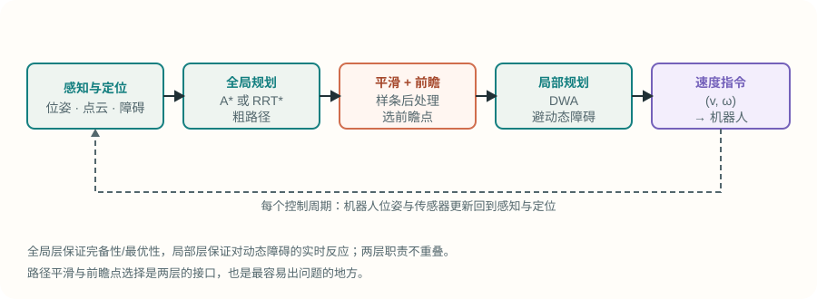

综合项目：把全局规划、平滑与局部避障拼成一个能跑的导航栈
前面二十多章讲的是零件。这一章把它们装成一台机器：哪一层负责什么、层与层之间传什么、以及最容易被忽略的那条接口——前瞻点。附带一个不依赖任何第三方库、可直接运行并带断言的全局规划 + 前瞻示例。
要搭的是什么
目标很具体：在同时包含静态与动态障碍的环境里，从起点安全、高效地到达终点。一个最小可用的导航栈至少包含三个模块：
- 全局规划器：在已知的栅格/代价地图上计算一条从起点到终点的无碰撞粗略路径。可选 A*（追求最优性）或 RRT*（高维、渐进最优）。
- 局部规划器：沿全局路径前进，同时利用局部传感器避开全局地图里没有的动态障碍。推荐 DWA。
- 路径后处理：对全局路径做平滑，消除栅格带来的锯齿与不必要的急转弯（参见第 15 章的 shortcut 与样条）。
这是一个教学尺度的项目：它帮你把各章的知识连成一条链，但它不是机器人级导航栈。真实产品还需要传感器标定、定位融合、故障处理、参数自标定与安全认证，这些都不在本章范围内。不要把本章代码直接放到真车上。
分层架构
把模块排成一条数据流，职责就不会混：全局层管“往哪走”，局部层管“现在这一步怎么动”，中间靠一条平滑路径与前瞻点衔接。
CAPSTONE · 28

几个容易忽视的分层原则：
- 全局路径不是控制指令。它是一串离散点，不能直接交给底盘跟踪；必须经平滑与前瞻转为局部目标。
- 局部层不能绕过碰撞检查。无论全局路径多平滑，局部规划器输出的每条候选轨迹都要独立做碰撞与足迹检查（参见第 11–15 章的 MotionValid）。
- 两层频率不同。全局规划可以低频（甚至只在目标变化时触发），局部规划必须高频（每几十毫秒）。把两者混在一个循环里会让实时性变差。
接口陷阱：前瞻点
全局路径是稀疏的（例如每十个像素一个点），而局部规划器需要的是一个局部目标——不是全局终点，而是机器人前方“路径上的一点”。这个前瞻距离（lookahead distance）是整个栈里最容易被调坏的参数：
CAPSTONE · 28
另一个常见错误是坐标系的混淆：前瞻点与碰撞检查都应统一在一个坐标系里。若路径用世界坐标、而碰撞检测用机器人坐标，最常见的现象就是“感觉应该撞不上却撞上了”。调试时把全局路径、前瞻点、候选轨迹与碰撞判据画在一张图上，是定位这类问题最快的办法。
可运行的 A* + 前瞻示例（Python 3.10+）
下面是一个不依赖任何第三方库的迷你导航栈核心。为控制篇幅分为两段，按顺序放入同一个 nav_demo.py，运行 python3 nav_demo.py。第一段是全局规划（A*，4 邻域，Manhattan 启发式）：
# 教学示例：栅格 A*（4 邻域，Manhattan 启发式）+ 前瞻点（Python 3.10+）
import heapq
WALLS = {(2,1),(2,2),(2,3),(2,4),(2,5),(5,2),(5,3),(5,4)}
START, GOAL, N = (0,0), (7,7), 8
def neighbors(c):
x, y = c
for dx, dy in ((1,0),(-1,0),(0,1),(0,-1)):
n = (x+dx, y+dy)
if 0 <= n[0] < N and 0 <= n[1] < N and n not in WALLS:
yield n
def astar(start, goal):
openq, g, parent = [(0, start)], {start: 0}, {start: None}
while openq:
_, cur = heapq.heappop(openq)
if cur == goal:
path = []
while cur is not None:
path.append(cur); cur = parent[cur]
return path[::-1]
for nb in neighbors(cur):
if nb not in g or g[cur] + 1 < g[nb]:
g[nb] = g[cur] + 1; parent[nb] = cur
heapq.heappush(openq, (g[nb] + abs(nb[0]-goal[0]) + abs(nb[1]-goal[1]), nb))
return None
第二段接在第一段之后，实现前瞻点选择并做断言：
def lookahead(path, dist):
acc = 0
for a, b in zip(path, path[1:]):
acc += abs(a[0]-b[0]) + abs(a[1]-b[1])
if acc >= dist:
return b
return path[-1]
path = astar(START, GOAL)
assert path and path[0] == START and path[-1] == GOAL
for a, b in zip(path, path[1:]):
assert abs(a[0]-b[0]) + abs(a[1]-b[1]) == 1 and b not in WALLS
la = lookahead(path, 3)
assert la == path[3]
print(f"路径长度 {len(path)-1} 步；前瞻 3 步落在 {la}")
# 输出：路径长度 14 步；前瞻 3 步落在 (0, 3)
这些断言正好检查一个导航栈最核心的三件事：路径从起点连到终点（path[0] 与 path[-1]）、相邻点步长合法且不穿墙（弧长为 1 且不在 WALLS 中）、前瞻点确实落在路径上。lookahead 按弧长累积而不是按索引跳选——局部目标要在一段距离处，而不是在若干个点之后。
测试场景
至少准备三类场景，每类都要有可自动判定的断言，而不只是“看一眼图”：
- 简单房间：无障碍，验证从起点到终点基本功能正常；断言路径存在且边界合法。
- 迷宫：验证全局规划器能否绕障；断言路径不穿越任何障碍，且与理论最短长度的比值在可接受范围内（不应把样例长度当 benchmark）。
- 动态障碍：在路径中间临时放一个未在地图中标记的障碍，验证局部规划器能否避开；断言局部输出的轨迹与障碍保持最小间隙。
对带随机性的组件（RRT、RRT*、PRM 或带噪声的仿真），测试必须记录随机种子、预算、失败次数，不能只报成功样本的平均值（参见第 24 章的基准测试原则）。
选型清单
项目做完后，请能回答下面几个问题。它们也是常见的面试题——回答的质量区分了“能跑”和“优秀”：
- 为什么用 A* 而不是 Dijkstra？地图已知且静态时，A* 的启发式可以显著减少扩展节点数；地图很大时可考虑第 10 章的 JPS 进一步加速。但无论用哪个，都要保证启发式是可采纳的（第 5 章）。
- 为什么用 DWA 而不是 TEB 或 MPC？DWA 计算量低、实现简单，对差速底盘效果足够好；TEB 与 MPC 在高速车辆场景更有优势，但调参成本也更高。
- 前瞻距离多大？它应与速度、转弯能力相关，而不是固定像素数；先在 config 中暴露它，再通过实验确定。
- 能实时运行吗？瓶颈在哪？是 A* 的搜索耗时，还是 DWA 的采样数量？你做了哪些优化（例如 A* 的堆、DWA 的并行轨迹评估）？
- 地图分辨率怎么选？分辨率越细障碍越精细，但搜索空间越大（参见第 4 章的分辨率权衡）；要报出你选择时的依据。
交互：前瞻距离如何改变局部目标
机器人在路径中段，切换前瞻距离，看局部目标点如何在路径上前后移动——以及它带来的后果。
短前瞻：局部目标离机器人很近，会频繁重新选向、路径抖动。
课程地图
二十八章可以归成六个部分。用下表自检：每一部分你应能用一句话说清“它解决什么问题、在哪里会失效”。
| 部分 | 章节 | 核心问题 |
|---|---|---|
| 基础 | 01–05 | 坐标、障碍、运动与代价如何定义；C-空间、图与启发式。 |
| 图搜索 | 06–10 | Dijkstra、A*、变体、D* Lite 增量重规划与 JPS。 |
| 采样规划 | 11–15 | RRT／RRT*／PRM 的概率完备与渐进最优，以及路径后处理。 |
| 局部与约束 | 16–19 | DWA、势场、运动学曲线、动态环境重规划。 |
| 多目标与评估 | 20–24 | 多目标顺序、多机器人协调、优化方法、可视化与基准测试。 |
| 部署与前沿 | 25–28 | sim-to-real、学习型方法、趋势证据分级与本章综合项目。 |
刚读第一章时，路径规划看起来只是“找条路走过去”。现在你应该明白，它是一门融合了图论、几何、优化与学习的交叉学科：“找路”背后，是在不完备信息与有限算力下不断做取舍。
边界条件
- 教学尺度，不是机器人级：本章代码不含定位融合、传感器标定、故障处理与安全认证；不可直接部署到真车。
- 随机组件需要种子：若把全局规划换成 RRT／PRM，测试必须记录随机种子、预算与失败次数，不能只报成功样本。
- 前瞻与权重需实验确定：前瞻距离、DWA 评价权重与膨胀半径都没有普适常数，需要按平台标定。
- 不含性能宣称：示例只验证正确性（路径合法、前瞻在路径上），不构成任何算法 benchmark。
一个可交付的“完成”至少应包含：可复现的运行命令与断言、三个测试场景的结果、你为每个参数选值的依据，以及未执行的测试项。
原始来源
- Fox, Burgard & Thrun (1997), The Dynamic Window Approach to Collision Avoidance, IEEE Robotics & Automation Magazine 4(1)——DWA 的原始工作。
- Hart, Nilsson & Raphael (1968), A Formal Basis for the Heuristic Determination of Minimum Cost Paths, Artificial Intelligence 4(2)——A* 的原始工作。
- LaValle (2006), Planning Algorithms, Cambridge University Press——完整教材（含 RRT、PRM 与运动学规划）。
- ROS 2 Nav2 官方文档——工业级导航栈的模块划分与参数，可作对比参考。
- 本章的示例、图示与选型清单均为教学材料，不代表任何产品级导航栈。